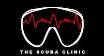

About |
|||
News & UpdatesChristmas Holiday Break10/06/2022The Scuba Clinic will be closed for our Christmas break from 5pm Thursday 23rd of December and will return on Monday 10th of January 2022. We wish all our customers a very Merry Christmas and a Happy New Year. |

We keep your dive gear healthy What is The Scuba ClinicThe Scuba Clinic was created to provide the diving public with a professional, honest, reliable place to bring their scuba equipment, to be kept in top working order. |
||
|
The only focus of the Scuba Clinic is Servicing and Repairs, enabling us to provide a level of service second to none. Without the day to day interruptions that usually occur within a dive shop, scuba servicing can be completed without cutting corners or the risk of errors. After many years of servicing scuba equipment, we have heard of and seen a large variance of service standards throughout Australia. The Scuba Clinic's goal is to lift the standard of scuba servicing to the professional level we believe it should be. WE TAKE LIFE SUPPORT SERVICING VERY SERIOUSLY !Who does your servicingThe Scuba Clinic is owned and run by Ian Wolverson. For over 17 years Ian has looked after the scuba equipment of many hundreds of sport divers and also numerous government departments. Ian has certificates from every available scuba equipment manufacturer and is also a level 3 Senior Technician / Trainer with TQS (Technicians Qualification System). Ian started diving in 1985 and has dived much of South Australia, including 18 years as an active cave diver with the Cave Divers Association of Australia. With this experience Ian understands the needs of both recreational and technical divers alike. Whilst working with numerous government departments he also understands the needs of working divers and occupational health and safety requirements. Our promise to our customers
At The Scuba Clinic we invite customers to inspect our first class facility and view the necessary qualifications for servicing life support equipment. We highly recommend that all divers wanting to get their life support equipment serviced, not only view a current certification, but also ask about the experience of the technician pulling apart your gear. REMEMBER, SCUBA EQUIPMENT KEEPS YOU ALIVE UNDERWATER !The Scuba Clinic Service Lab 
Dive Computer / Shark Shield Service Bench Interspiro-AGA Test Panel 

|
|||